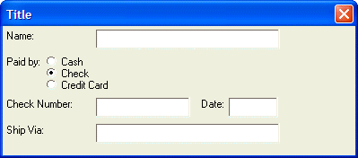
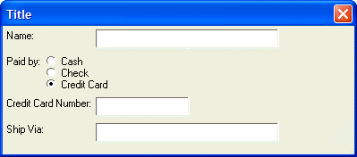

Conditionally Replacing controls
In the preceding example we saw that the space that would have been taken up by controls that are conditionally displayed is taken up even if the controls are not displayed.
In certain circumstances, you may want to replace one set of controls with another set of controls, depending on the value of a conditional expression. The {start_pos} command can be used to reset the starting position of the current cell to the top-left of the previous cell.
The syntax for the command is:
{start_pos} |
The {start_pos} command is used in the second and subsequent block of conditional controls. For example:
{condition=condition1} .. controls that display if condition1 is .t. {condition=condition2} {start_pos} .. controls that display if condition2 is .t. {condition=condition3} {start_pos} .. controls that display if condition3 is .t. |
It is recommended that you enclose each block of controls in {Region} {Endregion} command pairs. For example:
{condition=condition1} {region}.. controls that display if condition1 is .t.{endregion} {condition=condition2} {start_pos} {region}.. controls that display if condition2 is .t.{endregion} {condition=condition3} {start_pos} {region}.. controls that display if condition3 is .t.{endregion} ; |
IMPORTANT : Notice in the above sample code structure that the {endregion} for each conditional control is not terminated with a line break command ( ';' ), A line break is only used after the last conditional control
The following script demonstrates how this can be used. The dialog displays a prompt for Credit Card Number if the radio button is set to credit card. If the radio button is set to 'Check', the dialog displays a prompt for Check Number and Date in the place where the prompt for Card Number was displayed.
payby = 1 ui_dlg_box("Title",<<%dlg% {region=a} Name:|[.40name]; {endregion}; {region} Paid by: (payby={Cash,Check,Credit Card}); {endregion}; {condition=(payby=3)} {region=a} Credit Card Number: |[.20number] {endregion} {condition=(payby=2)} {start_pos} {region=a} Check Number: |[.20number] Date: [.10date] {endregion}; {condition=.t.} {region=a} Ship Via: |[.40ship_via]; {endregion}; %dlg%) |
This script produces this dialog when the condition, payby=2, is TRUE.

And, it produces this dialog when the condition, payby=3, is TRUE.

Lesson 4: Replacing Controls Conditionally
The key part of the above script is this set of statements:
{condition=(payby=3)} {region=a} Credit Card Number: |[.20number] {endregion} {condition=(payby=2)} {start_pos} {region=a} Check Number: |[.20number] Date: [.10date] {endregion} ; |
Notice that the region that contains the credit card number is not terminated with ';', while the region that contains the check number (the final conditional object) is terminated with ';'.
Next
Limitations
Desktop applications only.